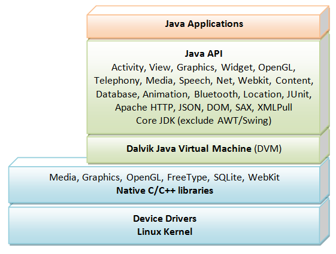

Introduction

Android is an Operating System for mobile devices developed by Google, which is built upon Linux kernel. Android competes with Apple's iOS (for iPhone/iPad), RIM's Blackberry, Microsoft's Windows Phone, Symbian OS, and many other proprietary mobile OSes.
The latest Android 6.0 supports Phone/Tablet, TV, Wear (watch and glass) and Automobile.
Android Platform
Android is based on Linux with a set of native core C/C++ libraries. Android applications are written in Java. However, they run on Android's own Java Virtual Machine, called Dalvik Virtual Machine (DVM) (instead of JDK's JVM) which is optimized to operate on the mobile devices.
The mother site for Android is http://www.android.com. For programmers and developers, visit http://developer.android.com to download the SDK, Android Training, API Guides and API documentation.
Installing Android SDK and Android Studio IDE
Installing all the necessary software needed for Android programming takes times - from 30 minutes to n hours to forever - depending on your luck and your PC. You probably need a fairly decent PC to run the Android emulator and 5-10GB of free disk space!!!
We need to install Android Studio, which is an IDE based on IntelliJ (a popular Java IDE); and Android SDK libraries.
Step 0: Pre-Installation Check List
- Before installing Android SDK, you need to install Java Development Kit (JDK). Read "How to install JDK". Ensure that your JDK is at or above 1.7. You can check your JDK version with command "
javac -version". - The installation and many operations take a LONG time to complete. Do not stare at your screen or at the ceiling. Browse through the "Android Training" @ Android Developers (http://developer.android.com). There are three main menus: "Design", "Develop", and "Distribute". Choose "Develop", you can find the Android "Training", "API Guides", "Reference" and "Tools". For beginners, browse through the "Training".
Step 1: Install Android Studio IDE and Android SDK
(For Windows)
- Check that environment variable
JAVA_HOMEis set to the JDK installation directory via command "set JAVA_HOME". Otherwise, set theJAVA_HOMEvia "Control Panel". Check the detail steps HERE. - Check the system requirements for Android Studio/SDK @ http://developer.android.com/sdk/index.html#Requirements.
- Goto "Android Developer" @ http://developer.android.com/index.html ⇒ Select "Get Android Studio" ⇒ "Download Android Studio For Windows", e.g.,
android-studio-bundle-141.xxxxxx-windows.exe, which is a huge file of 1.1GB. - Run the downloaded installer. Follow the on-screen instruction and accept the defaults to complete the installation. You need about 5GB of free disk space!
Take note that Android Studio IDE is installed in "C:\Program Files\Android\Android Studio" and Android SDK is installed in "C:\Users\your-username\AppData\Local\Android\sdk".
(For Mac OS X)
- Check the system requirements @ http://developer.android.com/sdk/index.html#Requirements.
- Goto "Android Developer" @ http://developer.android.com/index.html ⇒ Select "Get Android Studio" ⇒ "Download Android Studio For Mac". E.g.,
android-studio-ide-141.xxxxxx-mac.dmg(360MB). - Launch the downloaded
.dmginstallation file. - Drag and drop Android Studio into the "Applications" folder.
Note: If you see a warning that says the package is damaged and should be moved to the trash, go to System Preferences ⇒ Security & Privacy ⇒ under Allow applications downloaded from ⇒ select Anywhere. Then run again.
The Android SDK is installed in "~/Library/Android/sdk/".
Step 2: Post-Installation - Adding More SDK Packages
The installation installed basic SDK packages. You still need to add a few more to run the Hello-world.
Adding too many SDK packages, especially the so-called system image for emulating different device (e.g., various phone/tablet), will take an extremely LONG time, especially if everyone is downloading and jamming up the network. The system images also take up a lot of disk space - more than 10 GB per API level!!! For our toy project, we only need a small set of SDK packages.
[TODO] Check if it is possible to copy the SDK instead of downloading during installation?
(For Windows)
- Launch Android Studio ⇒ Check "I do not have previous version of Android Studio" ⇒ Android studio setup wizard will download more SDK components ⇒ Wait for it to complete ⇒ Finish.
- Select "Configure" ⇒ "SDK Manager" ⇒ Select "SDK Tools" tab ⇒ Check "Android Support Library", "Intel x86 Emulator Accelerator (HAXM Installer)" and "Google USB Driver" ⇒ Apply.
(For Mac OS X)
- Launch Android Studio (from Applications) ⇒ Android studio setup wizard will download more SDK components ⇒ Wait and wait and wait for it to complete ⇒ Finish. (If error occurs in installing "platform-tools" ⇒ Cancel.)
- Select "Configure" ⇒ "SDK Manager" ⇒ If error "Please specify an Android SDK Location" occurs, click "Edit" and COPY the SDK location "
/Users/.../Library/Android/sdk", then select "Configure" ⇒ Project defaults ⇒ Project structure ⇒ In "Android SDK Location", PASTE it. - Select "Configure" ⇒ "SDK Manager" ⇒ "Launch Standalone SDK Manager" ⇒ Click "Deselect All" (otherwise, it will take hours to install all the packages) ⇒ Check that these packages are "installed"; otherwise, check them to install:
- Under "Tools":
- "Android SDK Tools"
- "Android SDK Platform-tools"
- "Android SDK Build-tools (highest version)"
- Under "Android 6.0 (API 23):
- "SDK Platform"
- At least one "System Image". If any of the "xxxxxx System Images" is already installed, okay. Otherwise, check "Google APIs" and "Google APIs Intel x86 Atom System Image" (which seems to be the fastest among a few I tried).
[Notes: (1) System Image is huge (>1GB each). (2) Android devices could be built on many different hardware processors, e.g., Intel x86, ARMv5, and ARMv7. Android SDK provides "emulator" for you to test your app on ALL hardware, by building a System-Image for EACH of the hardware. Our toy project does not need to be simulated on ALL hardware but just anyone of the hardware!]
- Under "Extras":
- "Android Support Library"
- "Google Repository"
- "Intel x86 Emulator Accelerator (HAXM Installer)"
~/Library/Android/sdk" for Mac OS X. - Under "Tools":
Write your First Android App
Android apps are written in Java, and use XML extensively. I shall assume that you have basic knowledge of Java and XML.
Take note that Android emulator is slow - VERY VERY VERY SLOW!!! Be Patient!!!
Hello-World
Step 0: Read
Goto "Android Training" @ http://developer.android.com/training/index.html. Read "Get Started" and "Building your first app".
Step 1: Create a New Android Project
- Launch Android Studio.
- Choose "Start a new Android Studio Project".
- In "Create New Project" dialog ⇒ Set "Application Name" to "Hello Android" (this will be the title in your app menu) ⇒ Set your "Company Domain" to "
example.com" ⇒ In "Project Location", choose your project directory, e.g.,d:\myProject, or use the default location ⇒ Leave the rest to their default values ⇒ Next. - In "Select the form factor your app will run on" ⇒ Check "Phone and Tablet" ⇒ In "Minimum SDK", choose "API 8: Android 2.2 (Froyo)" ⇒ Leave all of the other options (TV, Wear, and Glass) unchecked ⇒ Next.
- In "Add an activity to Mobile" dialog ⇒ Select "Blank Activity" (default) ⇒ Next.
- In "Customize the Activity" dialog ⇒ Set "Activity Name" to "
MainActivity" ⇒ Set "Layout Name" to "activity_main" ⇒ Set "Title" to "MainActivity" ⇒ Set "Menu Resource Name" to "menu_main" (these are also the default values) ⇒ Finish. - Be patient! It could take a while to set up the "first" app. The app appears after "Indexing..." (at the bottom status bar) completes. By default, a hello-world app is created.
Problem & Error Notes:
- [March 2016] There is a bug in Android support design lib version 23.2.0, which cause an error "The following classes could not be instantiated:
android.support.design.widget.FloatingActionButton" and took me a whole night to fix. But, this bug is fixed in 23.2.1 released on 11 March, 2016, so you do not need to fix. - If everything fails, select "File" menu ⇒ "Invalidate Caches / Restart..." ⇒ and wait ...
Step 2: Setup Emulator (aka Android Virtual Device (AVD))
To run your Android app under the emulator, you need to first create an Android Virtual Devices (AVD). An AVD models a specific device (e.g., Brand-X Model-Y). You can create AVDs to emulate different android devices (e.g., phone/tablet, android version, screen size, and etc.).
(For Windows)
A virtual device called "Nexus 5 API 23 x86" was installed during the installation. Do nothing.
(For Mac OS X)
- In Android studio, select "Tools" ⇒ Android ⇒ AVD Manager.
- Click "Create Virtual Device".
- In "Select Hardware" dialog ⇒ Choose category of "Phone", name of "2.7" QVGA" (the smallest device available - you can try a bigger device later) ⇒ Next.
- In "System Image" ⇒ Next.
- In "AVD Name", enter "QVGA" ⇒ Finish.
Step 3: Run the Android App On Emulator
- Select the "Run" menu ⇒ "Run app" ⇒ Check "Launch Emulator" ⇒ Select "Nexus 5 ..." (Windows) or "QVGA" (Macs) ⇒ OK.
- Be patient! It may take a few MINUTES to fire up the app on the emulator. You first see a black screen ⇒ then the word "Android" ⇒ then the wallpaper ⇒ then the "Hello, world!" message.
Observe the console messages and wait until the message "success" flashes:Device connected: emulator-5554 Device is ready: Nexus_5_API_23_x86 [emulator-5554] Target device: Nexus_5_API_23_x86 [emulator-5554] ...... Installing com.example.helloAndroid ..... Success [Switch to logcat]
If you have problem running the emulator, I suggest you try to run on a actual Android device (phone/pad) if you have one. Goto next step. - DO NOT CLOSE the emulator, as it really takes a long time to start. You could always re-run the app (or run a new app) on the same emulator. Try re-run the app by selecting "Run" menu ⇒ "Run app" ⇒ Now "Nexus 5 ..." or "QVGA" should appear under "Choose a running device" (as it has already started) ⇒ Select it ⇒ OK.
Problem & Error Notes:
- If you encountered error "HAX is not working..." ⇒ Open "SDK Manager" ⇒ Check if "Extras / Intel x86 Emulator Accelerator (HAXM Installer)" is installed ⇒ Place your cursor under "Intel x86 Emulator Accelerator (HAXM Installer)" to show the location of the downloaded installer (by default, "
C:\Users\your-username\AppData\Local\Android\Sdk\extras\intel\Hardware_Accelerated_Execution_Manager" for Windows or "~/Library/Android/sdk/extras/intel/Hardware_Accelerated_Execution_Manager" for Mac OS X) ⇒ Goto the the directory and run "intelhaxm-android.exe" to install HAXM ⇒ Be patient! The installer may take a while to launch ⇒ Follow the screen instructions to complete the setup.
Take note that: (a) In Wiindows, the "AppData" directory is hidden. You need to unhide via "Control Panel" ⇒ "Folder Options" (or "File Explorer Options" in Windows 10) ⇒ Check "Show hidden files, folders, and drives". (b) In Mac OS X, the "Library" folder is hidden. You can unhide via "Finder" ⇒ Go ⇒ Home ⇒ Settings ⇒ Show View Option.
If the problem persists, remove and then re-install. - If you encountered error "Intel virtualization technology (VT-x) is not turned on" ⇒ Check your BIOS setting to ensure that "Intel virtualization technology" is enabled. Shutdown and re-boot your PC to enter the BIOS setup. This is machine dependent. Google "Your-PC-brand-and-model enter BIOS setup".
If "Intel virtualization technology" is already enabled, this error is probably caused by your antivirus software. Disable your antivirus for this session and rerun.
See http://stackoverflow.com/questions/21635504/error-during-installing-haxm-vt-x-not-working. - If you have problem creating AVD via "AVD Manager" (On Mac OS X having error "Studio quit unexpectedly"), open the AVD manager via command line as follows:
// For Mac OS X cd ~/Library/Android/sdk/tools ./android avd // For Windows cd C:\Users\your-username\AppData\Local\Android\sdk\tools android avd
Step 4: Run the Android App on Real Devices
Reference: "Running Your App", "Run on Real Device" @ http://developer.android.com/training/basics/firstapp/running-app.html.
To run the Android app on a real device (Android Phone or Tablet):
- Connect the real device to your computer. Make sure that you have the "USB Driver" for your device installed on your computer. You can find the "Google USB Driver" @ http://developer.android.com/sdk/win-usb.html, and Google's certified "OEM USB Drivers" @ http://developer.android.com/tools/extras/oem-usb.html. If you device is not certified there, good luck! It took me many hours to find a compatible driver for my cheap un-brand Tablet.
- Enable "USB Debugging" mode on your real device:
(On Android 3.2 and older) From "Settings" ⇒ "Applications" ⇒ "Development" ⇒ Check "USB Debugging". This allows Android SDK to transfer data between your computer and your device. Also enable "Unknown source" from "Applications". This allows applications from unknown sources to be installed on the device.
(On Android 4.0 and newer) From "Settings" ⇒ "Developer options" ⇒ Check "USB Debugging".
(On Android 4.2/5.0 and newer) Need to enable "Developer options" via "Settings" ⇒ About Phone ⇒ tap "Build number" seven (7) times until "Developer Mode" is displayed. Return to the previous screen to find "Developer options".
Ref: See https://www.kingoapp.com/root-tutorials/how-to-enable-usb-debugging-mode-on-android.htm for detailed screen shots. - You shall see the message "USB Debugging Connected" when you plugs the USB cable into your computer.
- From Android Studio, select "Run" menu ⇒ "Run app" ⇒ Your device shall be listed under "Choose a running device" ⇒ Select the device ⇒ OK.
Notes: To delete a project, select "File" ⇒ "Close Project" ⇒ On the "Recent Projects" ⇒ Press "Delete" key on the project.
Hello-world "by Coding"
There are two ways to create User Interface (UI) on Android: (1) Write Java codes; (2) Layout via XML descriptions.
Let's begin with writting Java codes (because I suppose to teach you programming). We shall continue from the "Hello Android" project created earlier.
MainActivity.java
Expand the "app" node. Expand the "java" node. Expand the "com.example.helloandroid" package node. Open the "MainActivity.java" (which actually has been opened). REPLACE the onCreate() method as follows and add the import statement. Do not touch the rest of the codes.
package ......; import ......; import android.widget.TextView; // Add this line public class MainActivity extends ...... { // REPLACE the ENTIRE onCreate() method as follows: @Override protected void onCreate(Bundle savedInstanceState) { super.onCreate(savedInstanceState); TextView textView = new TextView(this); // Construct a TextView UI component textView.setText("Hello, from my code!"); // Set the text message for TextView setContentView(textView); // this Activity sets its content to the TextView } // Do not touch the rest of the codes ...... ...... }
Run the application ("Run" ⇒ "Run app"). You shall see the message "Hello, from my code!" displayed.
Dissecting the "MainActivity.java" - Application, Activity & View
An Android application could have one or more Activity.
An Activity, which usually has a screen, is a single, focused thing that the user can interact with the application (hence called activity). The MainActivity extends the android.app.Activity class, and overrides the onCreate() method. The onCreate() is a call-back method, which is called by the Android system when the activity is launched.
A View is a UI component (aka widget, or control). We construct a TextView (which is a subclass View for showing a text message), and set its text. We then set the content-view of the MainActivity screen to this TextView.
Android Application Descriptor File - "AndroidManifest.xml"
Each Android application has a manifest file named AndroidManifest.xml under "app ⇒ manifests". It describes the Android app.
For example, our "Hello Android" application, with an activity MainActivity, has the following manifest (generated automatically by the Android Studio when the project was built):
<?xml version="1.0" encoding="utf-8"?>
<manifest xmlns:android="http://schemas.android.com/apk/res/android"
package="com.example.helloandroid" >
<application
android:allowBackup="true"
android:icon="@mipmap/ic_launcher"
android:label="@string/app_name"
android:theme="@style/AppTheme" >
<activity
android:name=".MainActivity"
android:label="@string/app_name" >
<intent-filter>
<action android:name="android.intent.action.MAIN" />
<category android:name="android.intent.category.LAUNCHER" />
</intent-filter>
</activity>
</application>
</manifest>
- The
<manifest>element specifies the package name. - The
<manifest>contains one<application>element. - The
<application>element specifies the icon, label (the application's title) and theme of this application. It contains one ore more<activity>elements. - This application has one activity. The
<activity>element declares its program name ("MainActivity" in default package); and label (the activity's screen title). It may contain<intent-filter>. - The
<intent-filter>declares that this activity is the entry point (android.intent.action.MAIN) of the application. This activity is to be added to the application launcher (android.intent.category.LAUNCHER).
Hello-World using "XML Layout"
Instead of writing Java codes to create the user interface (UI) (as in the above example using a TextView component). It is more flexible and therefore recommended to layout your UI components via a descriptive XML layout file. In this way, you don't need to hardcode the views, and you can easily modify the look and feel of the application by editing the XML markups. The Java codes can therefore focus on the business logic.
To improve the performance, the XML files are compiled into binary using the Android Asset Packaging Tool (aapt). The devices store them as binary, and the file is read in binary, instead of converting back to XML, for efficiency.
Let's rewrite our hello-world to use XML layout.
Step 1: Create a New Android Application
Close the previous project, via "File" ⇒ Close Project (Always CLOSE the previous project before starting a new project).
Create a new Android project with application name "Hello Android XML", domain name "example.com". Select "Phone and Tablet". Create a "BlankActivity" with "Activity Name" of "MainActivity", "Layout Name" of "activity_main", "Title" name of "MainActivity", and "Menu Resource Name" of "menu_main".
Step 2: Define the Layout in XML - "res\layout\activity_main.xml" and "res\layout\content_main.xml"
Expand the "app", "res (resource)", "layout" node. Open the "activity_main.xml". Android Studio provides two views for this XML file: "Design (or Graphical)" and "Text (or XML)" - selectable at the bottom of the panel. Select the "Text" mode and study the codes:
<?xml version="1.0" encoding="utf-8"?>
<android.support.design.widget.CoordinatorLayout xmlns:android="http://schemas.android.com/apk/res/android"
xmlns:app="http://schemas.android.com/apk/res-auto"
xmlns:tools="http://schemas.android.com/tools"
android:layout_width="match_parent"
android:layout_height="match_parent"
android:fitsSystemWindows="true"
tools:context="com.example.helloandroidxml.MainActivity">
<android.support.design.widget.AppBarLayout ...>
......
</android.support.design.widget.AppBarLayout>
<include layout="@layout/content_main" />
<android.support.design.widget.FloatingActionButton ... />
</android.support.design.widget.CoordinatorLayout>
The "activity_main.xml" includes "content_main.xml". Open "res\layout\content_main.xml" and study the codes:
<?xml version="1.0" encoding="utf-8"?>
<RelativeLayout xmlns:android="http://schemas.android.com/apk/res/android"
xmlns:app="http://schemas.android.com/apk/res-auto"
xmlns:tools="http://schemas.android.com/tools"
android:layout_width="match_parent"
android:layout_height="match_parent"
android:paddingBottom="@dimen/activity_vertical_margin"
android:paddingLeft="@dimen/activity_horizontal_margin"
android:paddingRight="@dimen/activity_horizontal_margin"
android:paddingTop="@dimen/activity_vertical_margin"
app:layout_behavior="@string/appbar_scrolling_view_behavior"
tools:context="com.example.helloandroidxml.MainActivity"
tools:showIn="@layout/activity_main">
<TextView
android:layout_width="wrap_content"
android:layout_height="wrap_content"
android:text="Hello World!" />
</RelativeLayout>
It declares a TextView (text field) that holds a text string "Hello World!". The TextView component has width and height big enough to hold its content ("wrap_content").
This activity's uses a "relative-layout", where its components are arranged relative to each other. It has width and height matching its parent ("match_parent") and some paddings.
Step 3: Defining String References and Values - "res\values\string.xml"
Instead of hardcoding the Hello-World string directly inside the TextView, we shall use a string reference (similar to a variable) for better flexibility.
Expand res/values node. Open strings.xml, and ADD the line in red:
<resources>
<string name="app_name">Hello Android XML</string>
<string name="action_settings">Settings</string>
<string name="hello">Hello world from XML!</string>
</resources>
The "string.xml" defines 3 references/values:
- A string reference "
hello" contains the value of "Hello world from XML!". - A string reference "
app_name" contains the application's name, that you entered when you created the project. - A string reference "
action_setting".
Now, modify the "content_main.xml" to use the string reference "hello", in the format "@string/hello", as follows:
......
<TextView
android:layout_width="wrap_content"
android:layout_height="wrap_content"
android:text="@string/hello" />
......
Step 4: The Activity - "MainActivity.java"
Next, study the "MainActitivy.java" (under app/java/com.example.helloandroidxml), as follows:
package ......;
import ......;
public class MainActivity extends ...... {
@Override
protected void onCreate(Bundle savedInstanceState) {
super.onCreate(savedInstanceState);
setContentView(R.layout.activity_main);
// Use "activity_main.xml" to layout the screen.
// "activity_main.xml" includes "content_main.xml" which we modified.
......
}
......
......
}
The "MainActivity" sets its content-view to "R.layout.activity_main", which is mapped to the XML layout file "res\layout\activity_main.xml" that we have studied earlier. The "activity_main.xml" includes "content_main.xml", which we modified.
Step 5: Run the App
Run the application. You shall see the new string "Hello, from XML!" displayed.
Next?
Continue with the "Android Training" @ http://developer.android.com/training/index.html.
Read the Android "API Guides" @ http://developer.android.com/guide/components/index.html, and Demos.
REFERENCES & RESOURCES
- Android SDK @ http://developer.android.com/sdk/index.html.
- "Android Training" @ http://developer.android.com/training/index.html.
- Android "API Guides" @ http://developer.android.com/guide/components/index.html.